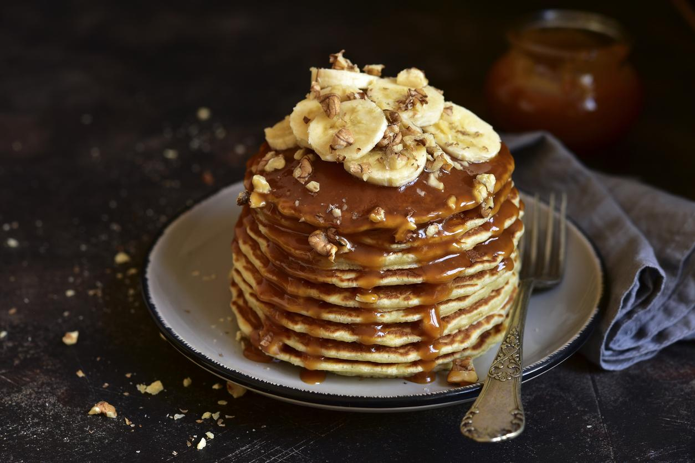
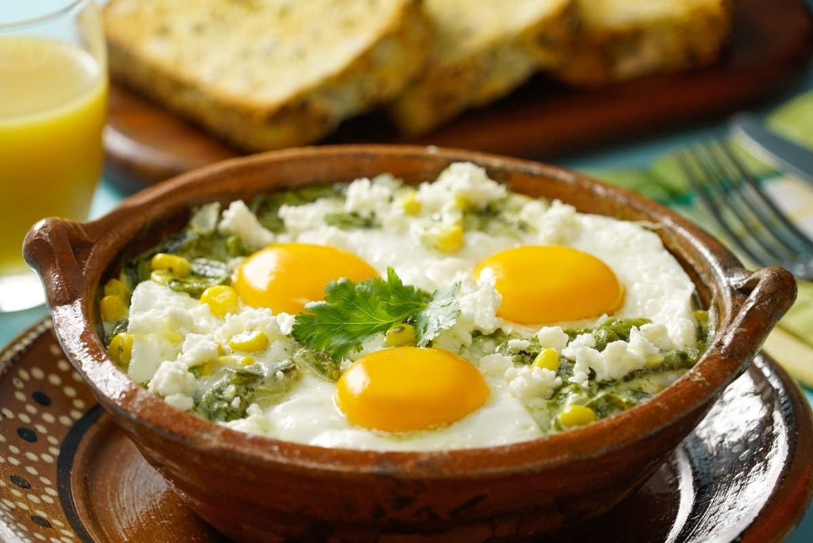
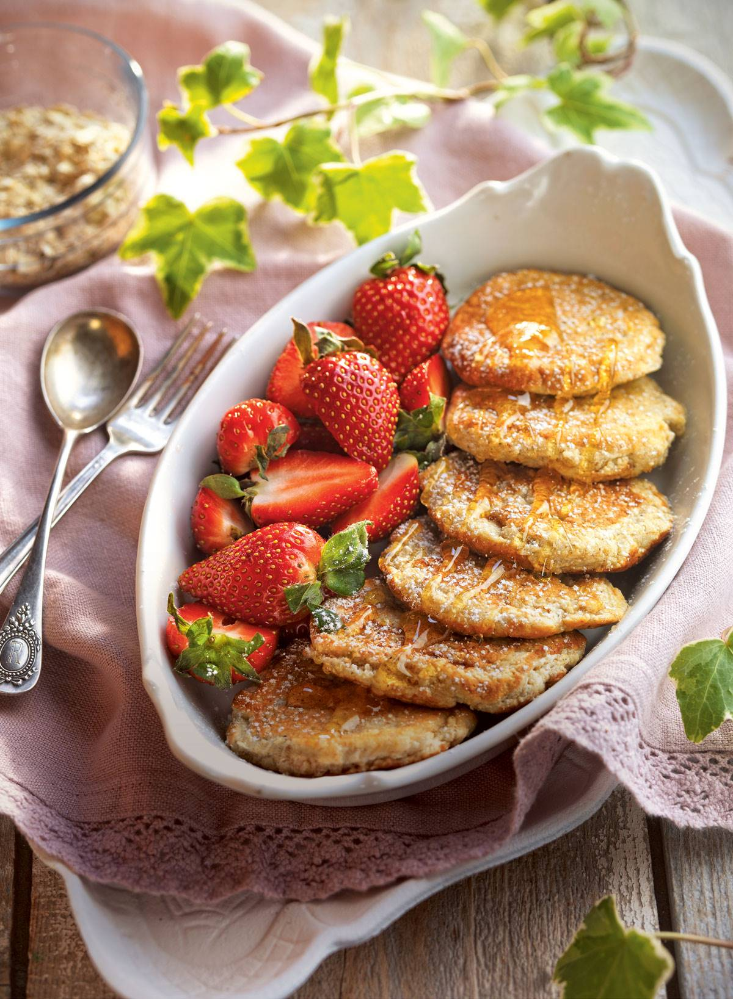

¿Estás listo para empezar tu día de la mejor manera?
No te pierdas estas saludables y rápidas recetas para tener un desayuno delicioso
Smoothie de bayas de Goji
Una de las formas más fáciles de consumir bayas de goji es a través de smoothies o productos lácteos.
SMOOTHIE DE BAYAS DE GOJI
Ingredientes (para 4 personas)
2 naranjas
1 trocito de raíz de cúrcuma (como una uña del dedo pulgar)
3 cucharadas de bayas de goji
1 trocito de jengibre (una uña del dedo pulgar, opcional)
Media taza de agua (más, si lo deseas más líquido)
Elaboración
Paso 1: Pela las naranjas y saca alguna rodaja.
Paso 2: Introduce todos los ingredientes en la batidora.
Paso 3: Bate todo hasta obtener una textura homogénea y ya estará listo para consumir.
Copa de frutos con requeson y Miel
Si quieres empezar el día con un desayuno saludable y ligero, esta copa de frutos del bosque está deliciosa
COPA DE FRUTOS DEL BOSQUE CON REQUESÓN Y MIEL
Ingredientes (para 4 - 6 personas)
50 gramos de moras
50 gramos de arándanos
50 g de frambuesas
50 gramos de fresitas del bosque
50 gramos de grosellas
200 gramos de requesón
4-6 cucharadas de miel
Menta fresca
Elaboración
Paso 1. Limpia y corta los frutos del bosque, retira también las hojas y rabos que puedan tener. Corta algunas frambuesas y algunos arándanos. Las moras, córtalas en mitades o cuartos la mitad.
Paso 2. Pon toda la fruta en un cuenco y mezcla con delicadeza para no aplastarla.
Paso 3. Echa la fruta en partes iguales en la base de cuatro copas de cristal. Encima, pon unos trocitos de requesón y un poco de miel.
Paso 4. Coloca más frutos rojos, un poco de requesón y miel.
Paso 5. Termina este postre con algunas grosellas, un poco de miel y unas hojitas de menta fresca.
El truco: en el momento de servir, en lugar de añadir más miel, agrega un poco de coulis de frambuesas.

Tortitas de avena con plátano
Para que sea un desayuno sano para niños se puede acudir a cereales como la avena, menos azúcar y más fruta.
TORTITAS DE AVENA CON PLÁTANO
Ingredientes (para 4 personas)
5 cucharadas de harina de avena
100 gramos de fresas
75 ml de leche vegetal
2 cucharadas de miel
½ cucharadita de levadura
2 cucharadas de azúcar moreno
Canela
1 huevo
2 plátanos
Mantequilla
½ cucharadita de esencia de vainilla
Sal
Elaboración
Paso 1. Casca el huevo en un bol y bátelo junto con el azúcar. Añade la leche y mezcla.
Paso 2. Tamiza encima la harina con la levadura, la canela y una pizca de sal.
Paso 3. Pela los plátanos. Aplasta uno de ellos con un tenedor y añádelo al bol. Aromatiza con la vainilla. Bate hasta conseguir una crema homogénea.
Paso 4. Calienta 1 cucharada de mantequilla en una sartén antiadherente pequeña y cuaja la masa anterior en forma de tortitas. Cuécelas 2 minutos por cada lado. Retíralas y resérvalas.
Paso 5. Limpia las fresas, lávalas y córtalas con el plátano restante en rodajas.
Paso 6. Reparte las tortitas en los platos intercalando tortitas y capas de fruta. Vierte la miel por encima y sirve.
El truco: Para evitar que los plátanos se oscurezcan en contacto con el aire, rocíalos con zumo de limón.

Huevos a la cazuela con verduras
Un desayuno saludable debe estar compuesto por algún tipo de proteína.
Ingredientes (4 personas)
400 g de setas variadas
1 cebolleta
½ manojo de espárragos
4 huevos
50 ml de nata líquida baja en grasa 18%
25 g de queso cheddar curado rallado
Unas ramitas de tomillo fresco
Mantequilla
Sal
Pimienta
Elaboración
Paso 1: Lava y corta las setas, la cebolleta y los espárragos. Pon todas las verduras en un bol y reserva.
Paso 2: Calienta 2 cucharadas de mantequilla en una sartén, a fuego medio. Cuando la mantequilla esté casi derretida y empiece a formar espuma, sin dejar que se queme, añade las verduras.
Paso 3: Incorpora sal y pimienta al gusto, y saltea durante 3-5 minutos, removiendo a menudo.
Paso 4: Precalienta el horno a 190 °C. Unta con mantequilla 4 cazuelitas o recipientes individuales refractarios y reparte en ellas el salteado de verduras.
Paso 5: Para hacer los huevos a la cazuela, casca 1 huevo en cada una de ellas, procurando que la yema no se rompa. Espolvorea el queso rallado por encima.
Paso 6: Introduce las cazuelitas en el horno y deja cocer durante 10-12 minutos, hasta que el huevo esté cuajado a tu gusto, ¡listo!
Tostada de tortilla y salmón
Otra receta que podemos hacer con huevo es una tortilla. Es un desayuno sano y rápido de hacer
Ingredientes (para 4 personas)
4 rebanadas de pan de hogaza
1 tarrina de queso blanco para untar a las finas hierbas
100 gramos de trucha ahumada
4 huevos
Unos tallos de cebollino
Aceite de oliva
Sal
Elaboración
Paso 1. Lava, seca y pica el cebollino. Corta el salmón ahumado en tiritas.
Paso 2. Coloca las rebanadas de pan en el horno y tuesta un poco. Mientras, haz la tortilla que debe quedar dorada por fuera y jugosa por dentro.
Paso 3. Repite la operación con el resto de los huevos hasta obtener cuatro tortillas.
Paso 4. Unta las tostadas con el queso a las finas hierbas, y luego añade el salmón ahumado.
Paso 5. Para terminar, espolvorea con el cebollino y, ¡listo para desayunar!

Tortitas de claras con fresas
Estas tortitas de claras con fresas alegrará tu mañana gracias a su delicioso sabor y fácil preparación.
Ingredientes
4 claras (que hayan sobrado de otro postre)
50 gramos de avena molida
50 gramos de azúcar glas
50 gramos de panela
1 vaina de vainilla
200 gramos de fresas
Margarina
Elaboración
Paso 1. Cuece 50 ml de agua con el azúcar y la vainilla partida por la mitad 3 min, hasta obtener un sirope. Retira y deja infusionar; cuando se enfríe, desecha la vainilla.
Paso 2. Monta las claras a punto de nieve firme. Tamiza la avena y el azúcar glas.
Paso 3. Añade las claras cucharada a cucharada y con movimientos envolventes para que no se bajen, hasta que todo quede bien integrado.
Paso 4. Toma porciones de la masa, forma tortitas y dóralas en una sartén engrasada con margarina. Hazlo por las dos caras y a fuego lento y resérvalas.
Paso 5. Lava las fresas, sécalas con papel de cocina y pártelas por la mitad o en cuartos. Sirve las tortitas regadas con un hilo de sirope de vainilla y acompañadas de las fresas.
Un consejo: para que las claras se monten bien y las tortitas queden más esponjosas, deben estar a temperatura ambiente y para que queden más firmes, bátelas con una pizca de sal. Sirve las tortitas con la fruta que tengas.